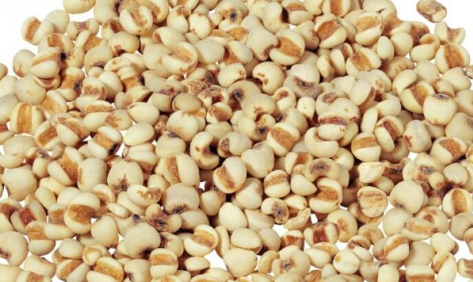

薏米的功效
薏米介绍
薏仁(拉丁Semen Coicis英文名Coix Seed)又名薏苡仁、苡米、苡仁，土玉米，薏米、起实、薏珠子、草珠珠、回回米、米仁、六谷子。是常用的中药.又是普遍、常吃的食物，性味甘淡微寒，有利水消肿、健脾去湿、舒筋除痹、清热排脓等功效，为常用的利水渗湿药。薏仁又是一种美容食品，常食可以保持人体皮肤光泽细腻，消除粉刺、斑雀、老年斑、妊娠斑、蝴蝶斑，对脱屑、痤疮、皲裂、皮肤粗糙等都有良好疗效。

薏米的营养价值
科属：禾本科薏苡属。为一年生草本。秆直立，高1～1.5米，约有10节。叶鞘光滑，上部者短于节间;叶舌质硬，长约1毫米;叶片线状披针形，长达30厘米，宽 1.5～3厘米。总状花序，腋生成束，长6～10厘米，直立或下垂，具总柄;雌小穗位于花序的下部，长7～9毫米，外包以念珠状总苞，小穗和总苞等长，能育小穗。第一颖下部膜质，上部厚纸质，先端钝，具10数脉;第二颖船形，被包于第一颖内，前端厚纸质，渐尖;第一小花仅具外稃，较颖略短，前端质较厚而渐尖;第二稃稍短于第一外稃，具3脉;内稃与外稃相似而较小;雄蕊3枚，退化，微小;雌蕊具长花柱，柱头分离，伸出总苞;退化雌小穗2个，圆柱状，并列于能育小穗的一侧，顶部突出于总苞;雄小穗常3个着生于一节，其中一个无柄，长 6～7毫米，颖革质，第一颖扁平，两侧内折成脊，前端钝，具多条脉;第二颖船形，具多数脉;内含2小花，外稃和内稃都是薄膜质;每小花含雄蕊3个;有柄小穗和无柄小穗相似，但较小或更退化。果实成熟时，总苞坚硬具珐琅质，卵形或卵状球形，内包颖果;颖果，长约5毫米。花、果期7～10月。
1.薏米面不仅含有高蛋白约12.8%，而且还含有丰富的维生素B族，矿物质，膳食纤维等。是一种营养平衡的谷物，其中含有8种人体必需的氨基酸，且其比例接近人体需要。
2.精加工后的薏米胚乳中，有现代人摄取不足的食物纤维，约是精大米的3倍，优良蛋白质则约为精大米的2倍多。
薏米的食用效果
3.薏米中的薏米酯、亚油酸是非常重要的抗癌成分。
1.防癌抗癌
其所含的硒元素能有效抑制癌细胞的繁殖，可用于霄癌、子宫颈癌的辅助治疗。健康人常吃薏米，能使身体轻捷，减少肿瘤发病概率。尤以脾虚湿盛的消化道肿瘤及痰热挟湿的肺癌更为适宜 。在日本，薏米被看成典型的“抗癌食品”，还能减轻肿瘤患者放化疗的毒副作用。
2.美白肌肤
保持人体皮肤光泽细腻，消除粉刺、色斑，改善肤色，并对由病毒感染引起的赘疣等有一定的治疗作用。
3.促进新陈代谢
可以起到减轻胃肠负担的作用，可作为病中或病后体弱患者的滋补食品，对慢性肠炎、消化不良等症也有较好效果。
4.降血糖
5.镇痛解热
具有镇静、镇痛及解热作用。对风湿痹痛患者有良效。
6.防治脚气病
7.清热去湿，健脾胃
天气燥热或胸中烦闷时，薏米能清除燥热，使身体舒畅。具有健脾、补肺、清热、利湿的作用，而且特别容易消化吸收，是很好的食疗食物，适合脾胃虚弱者食用。
8.增强免疫力和抗炎
薏米的食用禁忌
薏苡仁油对细胞免疫、体液免疫有促进作用。
1.汗少、便秘者不宜食用。
2.因为薏仁会使身体冷虚，虚寒体制不适宜长期服用，所以怀孕妇女及正值经期的妇女应该避免食用。
3.淘洗薏米的时候要注意，先用冷水轻轻淘洗，不要用力揉搓，再用冷水浸泡一会儿。泡米用的水要与米同煮，不能丢弃，这样可以避免薏米中所含的营养物质在浸泡中受到损失。
薏米的选购
家庭选购时，应挑选质硬有光泽，颗粒饱满的。颜色呈白色或黄白色较佳。坚实，多为粉性，且味甘淡或微甜者则为上品。
薏米的存储
薏米夏季受潮极易生虫和发霉，故映储藏于通风，干燥处，储藏前要筛选薏米中的粉粒，碎屑，以及防止生虫和生霉，少量薏米可密封于缸中和坛中，对于已发霉的可用清水洗干净后在晒干，如发现虫害要及时用硫磺熏杀。
薏米的烹饪小技巧
薏仁较难煮熟，在煮之前需以温水浸泡2-3小时，让它充分吸收水分，在吸收了水分后再与其他米类一起煮就很容易熟了。
 上一篇
上一篇